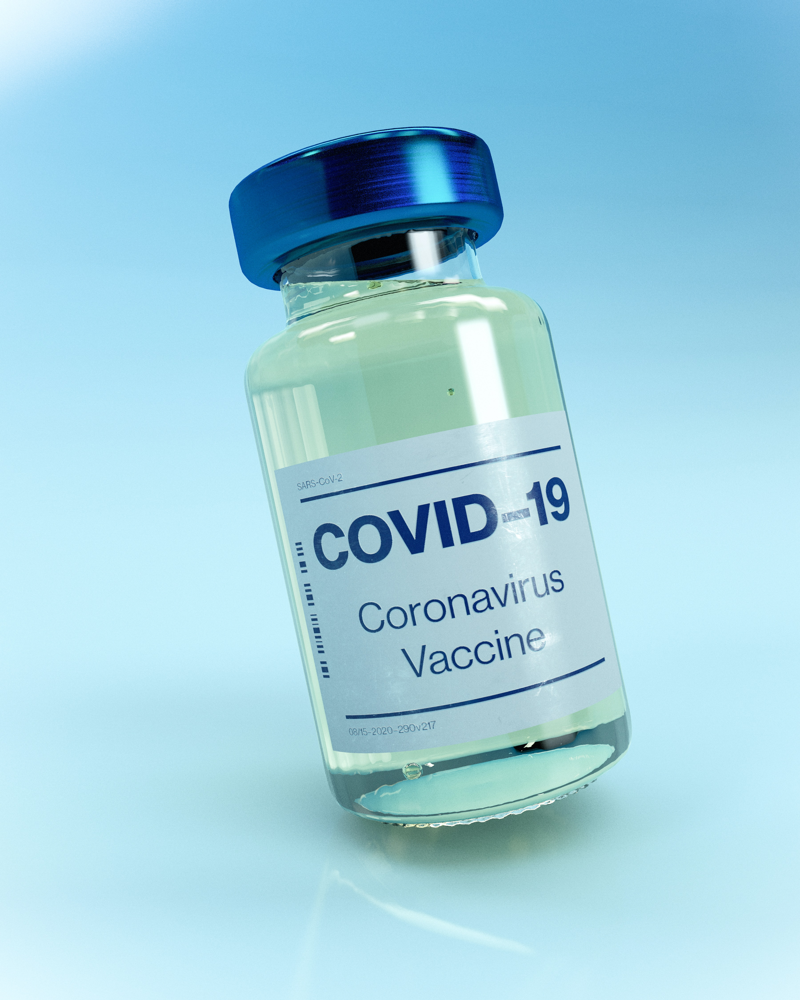
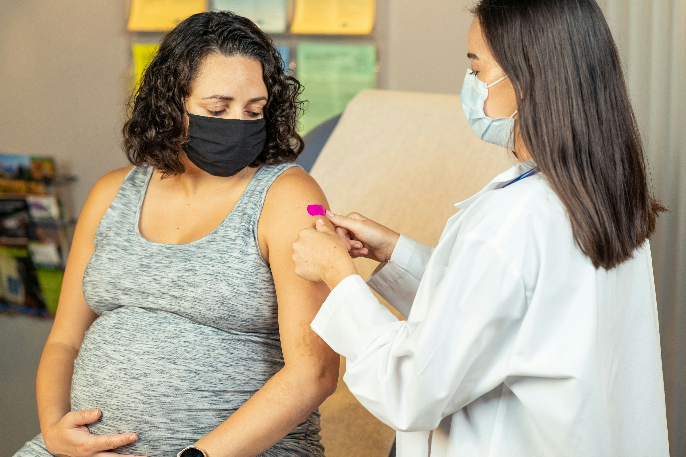

A healthcare professional administers a vaccine to a masked patient, showcasing a critical moment in health and safety efforts.
As we head into another fall and winter season, vaccines remain one of the best ways to protect ourselves, our families, and our communities from serious illness. But with leadership changes at the Department of Health and Human Services (HHS) and new decisions about vaccine guidance, many people are left wondering: What’s still recommended? What’s changed? And where can I find reliable information, I can trust?
This IAWH brief clarifies what’s going on, highlights where guidance has shifted and points you toward evidence-based resources you can rely on - including professional societies that continue to provide steady, science and evidence-based guidance.
A new moment for vaccine guidance
With Robert F. Kennedy, Jr. now serving as HHS Secretary, the way federal vaccine recommendations are made is shifting. The Advisory Committee on Immunization Practices (ACIP) - the CDC’s panel that sets vaccine schedules, and the U.S. Preventive Services Task Force (USPSTF) are both under new oversight.
Because of these changes, national vaccine policy can feel less clear, and states are playing a bigger role in determining access and eligibility. That means guidance may differ depending on where you live. To stay current, check both Vaccines.gov and with your state health department.
For evidence-based information outside of federal shifts, trusted sources include:
Professional organizations like the American Medical Association (AMA), American College of Physicians (ACP), American College of Obstetricians and Gynecologists (ACOG), American Academy of Family Physicians (AAFP), and American Academy of Pediatrics (AAP) continue to issue clear recommendations based on longstanding medical consensus.
Where things stand now: COVID, Flu, and RSV
COVID-19 Vaccine & COVID Booster

A COVID-19 vaccine vial.
-
What is it? (quick refresher): COVID-19 is a virus that spreads through the air and ranges from mild cold-like illness to severe pneumonia, blood clots, and long COVID.
-
What does the COVID-19 vaccine do: The COVID-19 vaccine helps your immune system recognize the virus early, reducing your chance of getting severely sick, hospitalized, or dying - and continuing boosters helps maintain that protection as immunity wanes and variants evolve.
What the science-based guidance says:
- In 2023–24 and again in 2024–25, the CDC recommended updated COVID-19 vaccination for everyone ages 6 months and older to reduce hospitalizations and death. That universal recommendation was the basis for clinical practice and coverage. CDC+1
Who should lean toward getting a booster now
- Adults 65+, and people of any age with chronic conditions (e.g., heart or lung disease, diabetes, kidney disease, immunocompromise). These groups have the highest risk for severe outcomes and stand to benefit most. CDC

A pregnant woman receives a vaccine at a healthcare facility, with a medical professional.
“Original” vaccine vs. booster (how to think about it)
- If you’ve never been vaccinated (or are far behind): your clinician will discuss starting/finishing a primary series using the current 2025–26 formulation (it’s the same strain as the booster). The Medical Letter
- If you’re already vaccinated: talk with your clinician about getting a 2025–26 booster dose under shared decision-making. HHS.gov
What changed (Sept 19, 2025):
- ACIP (the CDC committee) voted to change to the COVID vaccination schedule, making it a matter of shared clinical decision-making for everyone ages 6 months and older - i.e., you and your clinician/pharmacist decide based on your age, health conditions (risk), pregnancy, and exposure. ACIP emphasized the greatest benefit for adults 65+ and for people of any age with underlying conditions. HHS.gov
- This did not set a new minimum age—it kept ≥6 months but changed the strength of the recommendation (from “everyone should” to “decide with your clinician”). HHS.gov
What medication is available if you get COVID:
If you get COVID, despite vaccination (or before you can get vaccinated), there are several medications that can help reduce severity, hospitalizations, or death. These are mostly for people at higher risk of complications. Examples include:
- Paxlovid (nirmatrelvir + ritonavir) — an oral antiviral; when started early (within ~5 days of symptoms), it can sharply lower risk of severe disease/hospitalization. Mayo Clinic+3Yale Medicine+3CDC+3
- Molnupiravir (Lagevrio) — another oral antiviral, less potent than Paxlovid, used when Paxlovid can’t be used. American Medical Association+2U.S. Food and Drug Administration+2
- Remdesivir (Veklury) — intravenous antiviral used in certain moderate-to-severe cases. Mayo Clinic+2Wisconsin Department of Health Services+2
A doctor attentively listens and provides guidance during a patient consultation.
These medications are not substitutes for vaccination — they are backup tools after infection, and timing is critical. For example, oral antivirals must be started early in the course to work best. American Medical Association+2U.S. Food and Drug Administration+2
Discuss vaccine options with your physician.
Influenza (Flu)
The flu is a contagious respiratory virus that can cause fever, cough, body aches, and fatigue. It spreads quickly and can be especially dangerous for older adults, young children, and people with chronic conditions.
- Who: Everyone 6 months and older.
- When: One dose each year; adults 65+ should ask about high-dose or adjuvanted versions.
Source: CDC – Flu Vaccine • AMA Advocacy Update
Discuss vaccine options with your physician.
RSV (Respiratory Syncytial Virus)
RSV usually causes cold-like symptoms, but in infants, older adults, and people with chronic heart or lung conditions, it can lead to pneumonia or hospitalization.
- Who: Adults 75+; adults 50–74 with risk factors; pregnant women in their third trimester (to protect newborns); infants (through an antibody shot).
- When: Adults receive a one-time dose; infants receive an antibody injection per RSV season.
Sources: CDC – RSV Guidance • FDA – Infant antibody approval • ACOG Maternal Immunization Update
Discuss vaccine options with your physician.
MMR/MMRV: what these vaccines protect against, and what changed (Childhood Vaccine Schedule)
MMR protects against Measles, Mumps, and Rubella; MMRV also covers Varicella (chickenpox).
- Measles: high fever, cough, rash; can lead to pneumonia or brain swelling. Eliminated in the U.S. in 2000, but now resurging.
- Mumps: swelling of jaw/cheeks, sometimes infertility or hearing loss.
- Rubella: usually mild, but in pregnancy can cause miscarriage or birth defects. Eliminated in 2004, but at risk of return.
- Varicella (chickenpox): often mild but can cause serious infection, and shingles* later in life.

A young child sits quietly on a medical examination table while a healthcare professional places a bandage after giving a vaccine.
Before September 2025: The use of the MMRV combination vaccine for both doses at 12–15 months and 4–6 years was supported by evidence-based recommendations from leading medical societies, including the American Academy of Pediatrics (AAP) and the American Academy of Family Physicians (AAFP). These recommendations emphasized the strong protection provided by the vaccine and the benefit of fewer injections for young children. Research showed MMRV to be safe and effective.
What has changed?
In September 2025, the new ACIP (heavily populated by anti-vaccine advocates) voted to stop recommending the MMRV combination shot for children under age 4. Instead, doctors are now advised to give separate MMR and varicella vaccines for the first dose at 12–15 months, resulting in more jabs. The overall schedule has not changed: two doses remain — one at 12–15 months, and the second at 4–6 years.
Who Should Get the MMR-V Vaccine?
- Who: All children (with catch-up vaccination available for older kids and adults who missed doses).
- When: Two doses - 12–15 months and 4–6 years.
- Note: MMRV may still be used for the second dose at school age.
Sources: CIDRAP coverage • CDC – Measles Data • AAP News
What is the relationship between Chickenpox and Shingles?*
Chickenpox and shingles are caused by the same virus — varicella-zoster. After someone has chickenpox (or even after the chickenpox vaccine), the virus can stay dormant in the body and reappear years later as shingles, causing a painful rash and sometimes lasting nerve pain. That’s why adults age 50 and older are recommended to get the shingles vaccine: it strengthens immunity and lowers the risk of shingles and its complications, even if you’ve had chickenpox or the chickenpox vaccine in the past.
Discuss vaccine options with your physician.
Closing Thoughts
Vaccine guidance may feel more complicated this year with new leadership at HHS and changes in how recommendations are made, but the core message remains steady: vaccines are one of the best tools we have to prevent serious illness and protect our families. COVID-19 boosters are now a matter of shared decision-making, flu shots continue to be recommended each year, RSV protection is available for the most vulnerable groups, and MMR/MMRV vaccines remain essential for children.
For people living with chronic conditions, staying current on vaccines is especially important. The good news is that you don’t have to navigate this alone. Clinicians, pharmacists, and respected medical societies like the AMA, ACP, AAP, AAFP, and ACOG continue to provide clear, evidence-based guidance. By leaning on trusted resources and your own care team, you can make the best decisions for yourself and those you care for.
As always, at IAWH, our goal is to share information that provides context and content to inform your discussions with your care provider, ultimately supporting your decision-making process.
Cheryl Thompson, MSPH &Janine E. Payne, MPHCo-Executive Directors
This article first appeared on the IAWH Health blog on September 28, 2025 and is preserved here as part of the IAWH Health Journal archive. Information reflects what was known at the time of publication. This article is for general education and is not medical advice.